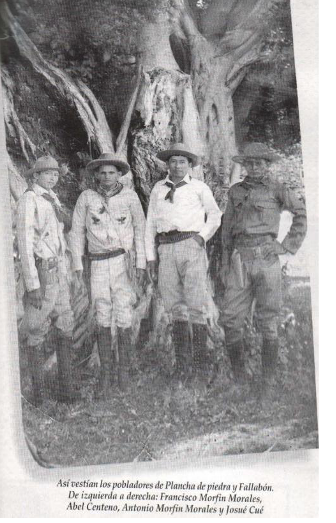

Melchor de Mencos, antes conocido como Plancha Piedra
Melchor de Mencos es uno de los 340 municipios de la República de Guatemala y pertenece al departamento de Petén. Tiene una extensión de alrededor de 2,098 kilómetros cuadrados.
Melchor de Mencos es uno de los 340 municipios de la República de Guatemala y pertenece al departamento de Petén. Tiene una extensión de alrededor de 2,098 kilómetros cuadrados.
Melchor de Mencos. Municipio en el departamento de Petén en la República de Guatemala donde se encuentran innumerables sitios arqueológicos aún no restaurados. Su extensión territorial es de 4 649 km², dividido en ejido municipal (382 caballerías), área urbana (casco urbano) y área rural.


Mini parque y estatua en homenaje a la antorcha. El 14 de septiembre, personas dan el grito de independencia y recordatorio al organizador de las antorchas "Arturo"

Este sitio también puede ser usado como un mini parque, con la pequeña diferencia que da bienvenida al pueblo

Parque principal de Melchor de Mencos, lugar de ventas y actividades sociales, buena opcion para pasar un rato.
Partiendo de la ciudad capital (Km. 0), tomando por la ruta al Atlántico sobre la carretera CA-9 hacia oriente, llegue a El Rancho, El Progreso, (Km. 85), continúe hacia Río Hondo, Zacapa (Km.136), llegue a Morales (Km.245), cruce a la izquierda por la carretera CA-13, llegará a Río Dulce (Km.276), continúe y llagará a San Luis, luego Poptún (Km.388) y luego llegará a Flores (Km. 488). Tome la carretera que va rumbo hacia Belice.
Anteriormente La Ciudad de Melchor de Mencos se le llamaba Plancha de Piedra o Plancha de Oro, por el movimiento de dinero que existía especialmente en el año de 1,928. En 1,868 fue creada en este lugar la Villa de Fallabón, por el ciudadano norteamericano don Carlos Carroll, un empresario maderero quien transportaba el producto forestal vía fluvial, lanzando las trozas en rollo sin ningún control al río Mopán, para ser llevadas a los aserraderos de empresarios ingleses en Belice, quien con autorización del gobierno central y con la promesa de poblar estos lugares, se estableció en los márgenes del río Mopán, trayecto hacia Belice. A partir de esa fecha se principio a llamar indistintamente a este lugar como PLANCHA DE PIEDRA O FALLABON, hasta que muchos años después posiblemente por comodidad, predominó el de FALLABON aunque esta situación no borró su anterior designación.
El nombre Fallabon derivo de mencionar “fire’ o “fuego” y “boom’ o “estallido’ cuando se incendio una bacadilla (almacenamiento de trozas) en el año 1950: hoy el lugar es un barrio mas de la Ciudad de Melchor de Mencos. La categoría de Ciudad se le concedió a Melchor de Mencos en el año de 1960 por el entonces presidente Miguel Idígoras Fuentes, por su ubicación geográfica fronteriza.
Muchas familias habitaron el antiguo lugar denominado Plancha de Piedra. por períodos intermitentes. reconociéndose como los primeros pobladores a los Casanova, Morfín, Llinas, Rosado y algunos de origen mexicano que llegaron al lugar atraídos por la fiebre del llamado “oro blanco”, el trabajo más antiguo que se desarrolló en este Municipio, No fue sino hasta el año 1962, que Melchor de Mencos fue desmembrado de la jurisdicción del Municipio de Flores. siendo su representante en aquel entonces el Perito Agrónomo Miguel Uck, originario de Ciudad Flores y quien desempeñaba el cargo de Comisario del Mando Civil,
Melchor de Mencos en sus inicios fue habitado por grupos Mayas, cuyos orígenes se remontan más allá del descubrimiento de América por los españoles. Lo que ahora es Melchor de Mencos era conocido en sus inicios como Plancha de Piedra, nombre que posiblemente se derivó por encontrarse la aldea en el único lugar plano a manera de “planchón’ y que hoy se conoce el lugar como barrio El Centro. Formaba parte del Municipio de Flores hasta el año de 1962 y el Ingeniero Miguel Idígoras Fuentes, lo bautizó con el nombre de Melchor de Mencos en honor al sargento mayor del mismo nombre, quien de acuerdo a la historia derrotó a los ingleses en la Laguna de Coba, caso contrario Melchor de Mencos sería hoy parte del territorio de Belice.
